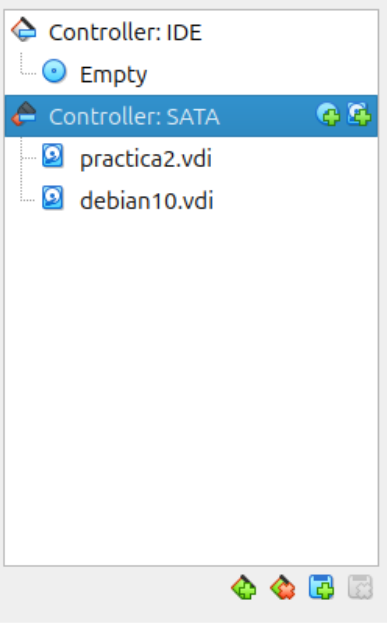
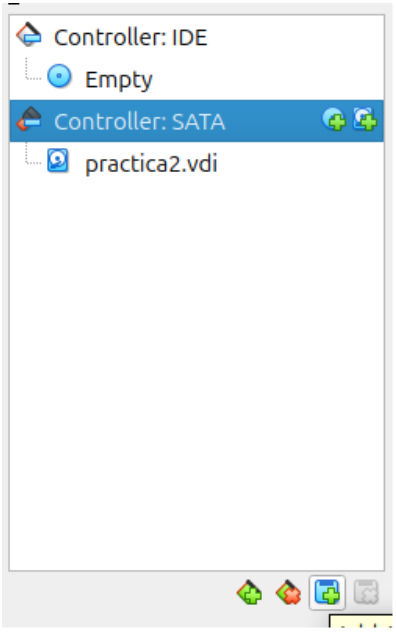
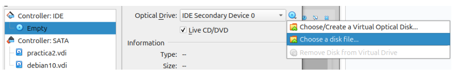
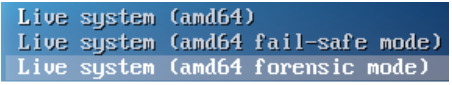
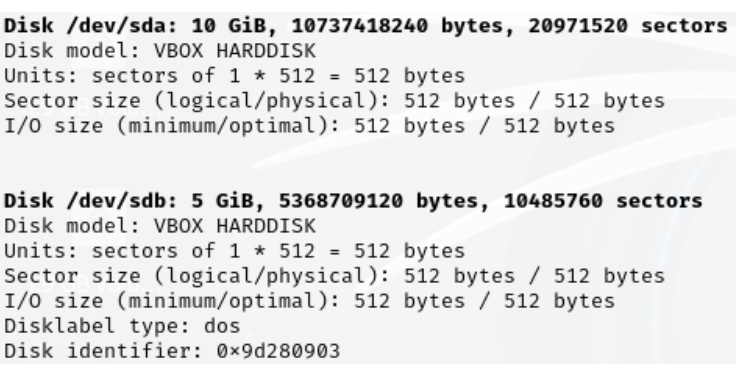
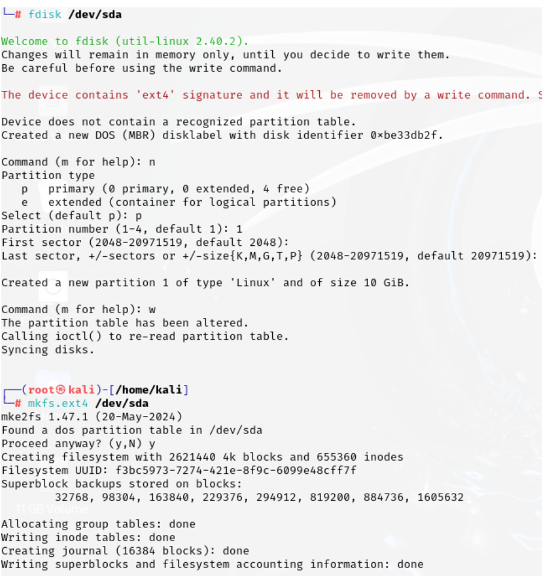
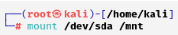
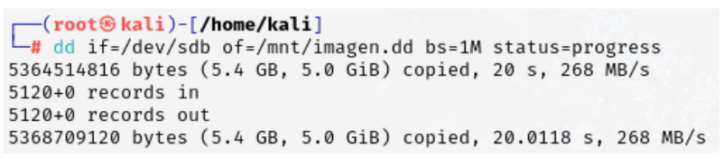
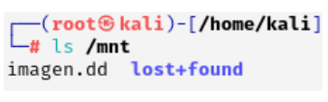
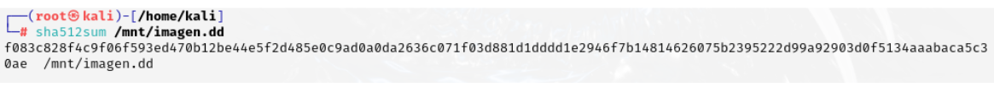

Añade el disco descargado con la opción “add” y arranca la máquina con un live ISO de Kali Linux. Selecciona la opción "forensic" para evitar contaminación del disco.
   Descripción General
Paso 1: Configuración de la Máquina Virtual
Descarga el archivo proporcionado y configura el segundo disco en el programa de virtualización.
Paso 2: Verificación de Discos
En Kali Linux, usa el siguiente comando para listar los discos disponibles:
fdisk -l
Verifica que puedes ver el disco de evidencia y el disco contenedor. Asegúrate de que hay espacio suficiente en el disco contenedor.
Paso 3: Cálculo del Hash de la Evidencia
Antes de empezar con el clonado o la creación de una imagen, calcula el hash del disco de evidencia utilizando el siguiente comando:
sha256sum /dev/sdX
(Reemplaza /dev/sdX con el dispositivo adecuado)
Paso 4: Clonado del Disco
Clona el disco de evidencia con el siguiente comando:
dd if=/dev/sdX of=/dev/sdY bs=4M
Calcula el hash del disco clonado para asegurarte de que coincide con el hash de la evidencia original:
sha256sum /dev/sdY
(Reemplaza /dev/sdY con el dispositivo adecuado)
Paso 5: Creación de Imagen del Disco
Formatea el disco contenedor si es necesario, luego crea una imagen del disco de evidencia con el siguiente comando:
dd if=/dev/sdX of=/ruta/a/imagen.img bs=4M
Verifica el hash de la imagen generada para asegurarte de que coincide con el de la evidencia original:
sha256sum /ruta/a/imagen.img    